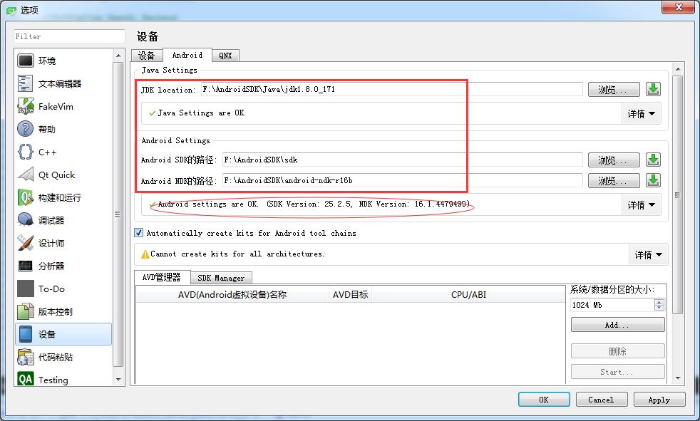
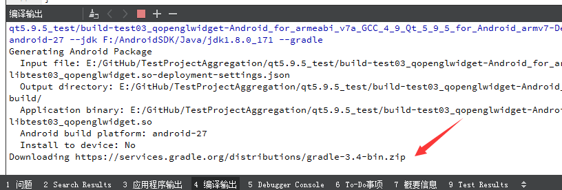
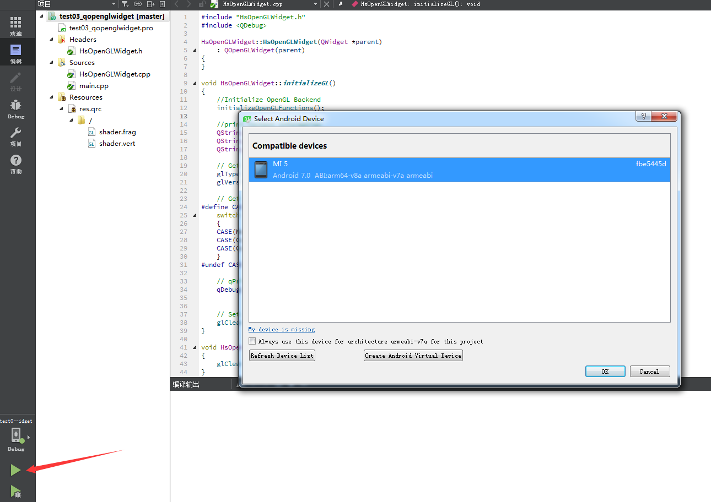

Qt5搭建Android开发环境
什么鬼？Qt的项目还能编译在安卓上？是的你没有看错，其实不仅可以在PC和Android上编译，还能在Linux、Windows Phone、IOS等等近十个平台上编译。要不怎么说Qt是个跨平台的开发框架呢？不过作者本人可没那么多经历去涉及到那么多平台，我一般只在PC上和本人的小米5手机上测试编译，不过相信以Qt的跨平台特性，只要不使用平台的专用代码，一般来说，都可一次编码，到处编译。
下载
- NDK，作者下载的是 android-ndk-r16b-windows-x86_64.zip
- ANT，作者下载的是 apache-ant-1.10.3-bin.zip
- JDK，作者下载的是 jdk-8u171-windows-x64.exe
- SDK，作者下载的是 Windows:installer_r24.4.1-windows.exe(Recommended)
解压
NDK 和 ANT 没什么好说的，解压就好了。我这里统一解压在 F:\AndroidSDK 路径下。不过5.9之后配置安卓开发环境好像不需要 ANT 了，笔者这里习惯性的下载了 ANT，不过影响不大。
JDK 的安装
JDK 的安装百度里面全都是教程，无非就是安装过后要设置下环境变量。现在的 JDK 都自带 JRE，在安装 JDK 的半途中会让安装 JRE。我这里选的路径分别为 F:\AndroidSDK\Java\jdk1.8.0_171 和 F:\AndroidSDK\Java\jre1.8.0_171。系统环境变量的修改分三步：①系统变量→新建 JAVA_HOME 变量。变量值填写jdk的安装目录（本人是 F:\AndroidSDK\Java\jdk1.8.0_171)。②系统变量→新建 CLASSPATH 变量，变量值填写 .;%JAVA_HOME%\lib;%JAVA_HOME%\lib\tools.jar（注意最前面有一点）。③系统变量→寻找 Path 变量→编辑，在变量值最后输入 %JAVA_HOME%\bin;%JAVA_HOME%\jre\bin; （注意原来Path的变量值末尾有没有;号，如果没有，先输入;号再输入上面的代码）。
检验是否配置成功 运行cmd 输入 java -version （java 和 -version 之间有空格），若显示版本号则说明安装正确并且环境变量也配置正确。
SDK 的安装
安装 Android SDK 之前必须配置好 JDK，否则不能安装 SDK。本文安装在了 F:\AndroidSDK\sdk\ 目录下。安装完毕之后，打开根目录下的 SDK Manager.exe ，右下角会提示你要安装 N 个packages（我这里14个），然后点击之后安装他就好了。一般默认勾选的都是必须要有的包。因为笔者网络环境不太好，这里下载了将近两个小时，sdk文件夹的大小，大约下载了 5G 以上的包。
Qt Creator 的配置
如下设置好。如果出现圆框内的各个版本号，说明配置成功。成功之后你会发现套件套件中多出了 Android for armeabi-v7a 套件（这里需要你在安装Qt的时候选择安装 android armeabi-v7a 模块）。

编译
我这里随便写了个项目就开始编译。但是编译的时候发现一直卡在下方这里。我们复制下箭头指这个网址下载这个zip，放在 C:/Users/mf/.gradle/wrapper/dists/gradle-3.4-bin/aeufj4znodijbvwfbsq3044r0 目录下（自己对应找你的目录）。然后结束编译重新编译下。这个过程也很长，因为第一次编译会下载一些依赖，以后就会好很多。

运行
顺利的话，你会在构建的影子工程 \android-build\build\outputs\apk 目录下编译出来一个 .apk 文件。这个 apk 文件你可以通过在电脑上安装安卓模拟器运行测试，也可以通过手机连上电脑，然后直接点运行就可以直接编译安装在你的手机上真机测试，这里不展开来讲，百度有很多类似的教程。反正笔者通过数据线把小米5连上笔记本之后，点击 Qt Creator 的三角形运行按钮，弹出的界面上直接就能看到小米5手机，然后点击Ok就开始编译编译完毕之后会将 apk 文件安装到手机上（这里需要在手机上同意下安装此应用），这个过程就是真机测试。
